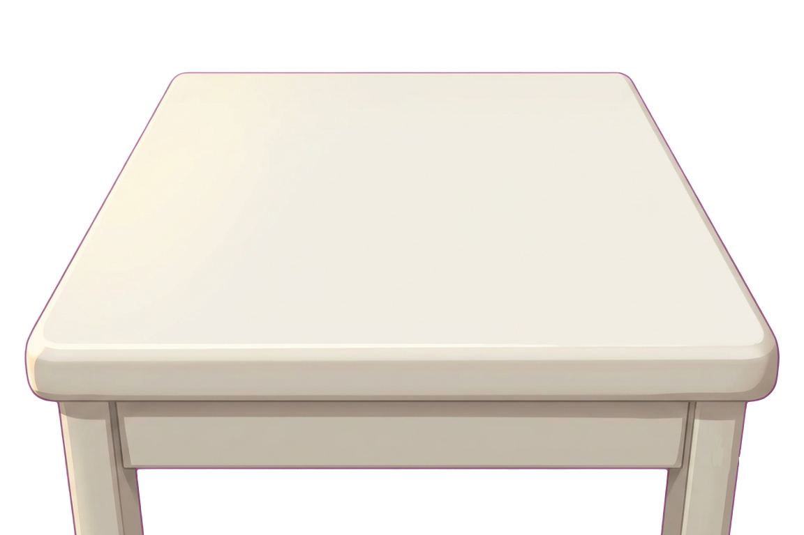
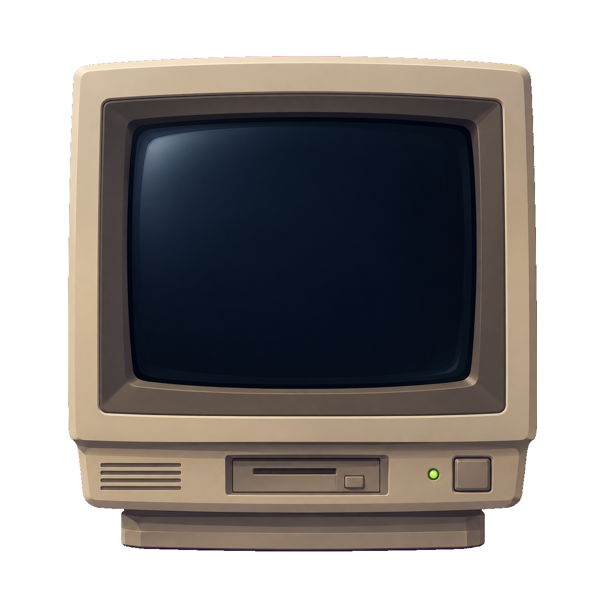
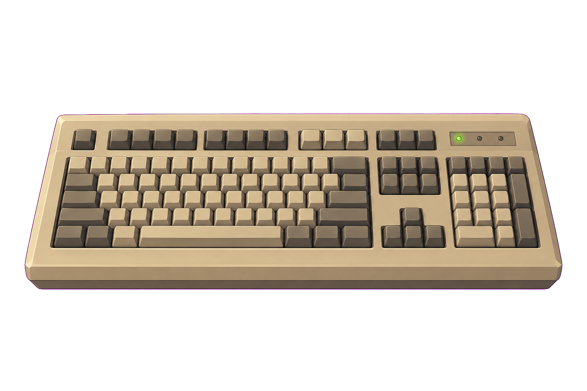

ENUHRI
PORTFOLIO HUB
A collection of projects, ideas, and creations. Explore my work through an interactive retro computer experience.



A collection of projects, ideas, and creations. Explore my work through an interactive retro computer experience.


